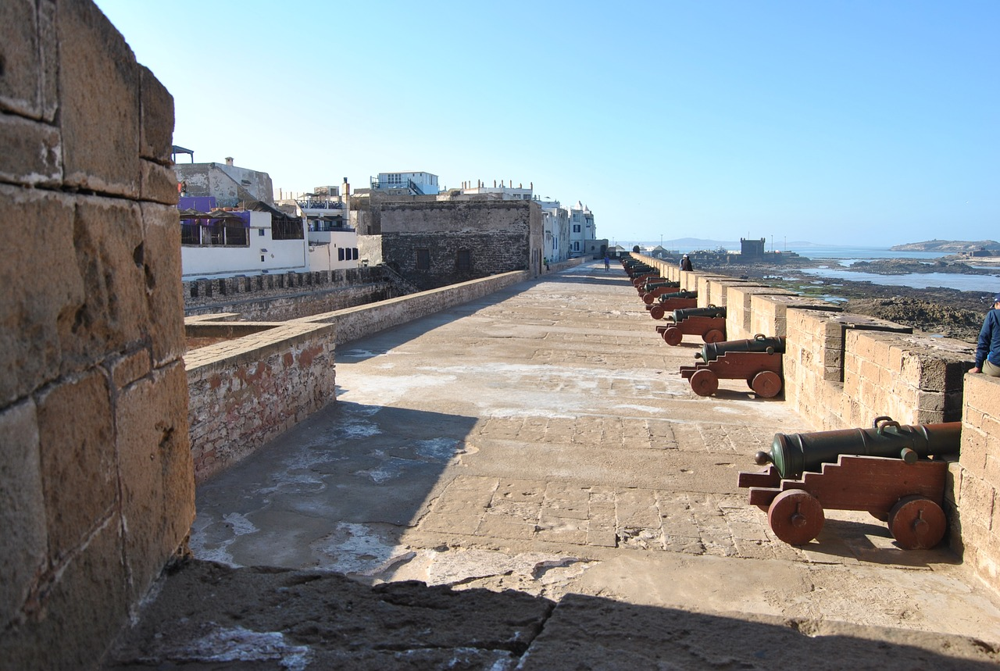

¡SaharaToursGo!
¡SaharaToursGo!
EL JADIDA
El Yadida o El Jadida, en Marruecos, es la capital de la provincia del mismo nombre, en la región de Doukkala-Abda, y significa ‘la nueva’. Pero no tiene nada que ver con esto, puesto que esta ciudad era la antigua Magazán, una de las ciudades más bellas de toda la costa atlántica de Marruecos. Actualmente cuenta con una población de unos de 130.000 habitantes.
Es uno de los destinos más frecuentados por los habitantes de Marrakech para veranear y uno de los centros turísticos más renombrados de todo el país. Rubisis, citada por antiguos autores, ocupó probablemente la situación donde los marinos portugueses establecieron el que sería con el tiempo el más importante centro comercial de la costa atlántica africana: Mazagán.
Los portugueses tuvieron esta ciudad durante 250 años. Tras la toma de la ciudad vecina de Azemmour en 1514, los portugueses decidieron construir aquí una fortaleza llamada Mazagán. Ésta se convirtió rápidamente en el centro del tráfico marítimo del Reino de Portugal, así como la medina fortificada y rodeada por un foso que aislaba la ciudadela, haciéndola impenetrable.
Tras su ocupación por el sultán alauí Sidi Mohammed Ben Abdallah, la ciudad pasa a llamarse El Brija El Jadida (‘la Fortaleza Nueva’) y a extramuros comienza a crecer una nueva ciudad.
Es una de las ciudades con más encanto de la costa marroquí, por lo que muchos son los turistas nacionales e internacionales que organizan viajes a El Jadida como parte de sus vacaciones. La ciudad tiene un bonito paisaje costero además de una bien conservada ciudadela portuguesa, uno de los puntos más interesantes de la ciudad. Protegida por la UNESCO y rodeada por una muralla almenada con bastiones, se entra a ella a través de la Rue de Carreira.
Esta ciudadela sirvió de cobijo a los judíos durante el siglo XIV. Sus muros estaban dotados de cinco bastiones, de los cuales cuatro fueron reconstruidos en el siglo XVIII. Desde lo alto del bastión de San Sebastián, el último de ellos, se puede apreciar una hermosa vista panorámica de la ciudad de El Yadida, la Puerta del Mar, el cementerio judío así como de la elegante capilla de la Inquisición.
Desde el Bastión del Angel también hay unas bellas vistas sobre la Puerta del Mar, el puerto, el océano y la dársena. Como curiosidad se cuenta que los portugueses en el año 1769 escaparon por esta puerta.
QUE VER EN EL JADIDA
Como explicábamos, uno de los lugares más interesantes que ver en El Jadida es su muralla con cinco bastiones, cuatro de ellos reconstruidos. Está acondicionada para pasear por lo alto de ella. El Bastión del Ángel y el del Espíritu Santo son los que mejores vistas nos dan de la ciudadela y de la zona del puerto. Merecen también una visita, la calle Mohammed-Al-Hachmi-Bahbah, que corre paralela a la muralla de la ciudadela portuguesa, y los bastiones de San Sebastián y de San Antonio, con unas estupendas vistas al mar
Por la Rue de Carreira, junto a las murallas, encontramos la Puerta del Mar, que es por donde se introducía la mercancía a la ciudad procedente de los barcos. Cerca de aquí se encuentra la antigua iglesia española de San Antonio de Padua.
En la Puerta del Mar hay unas escaleras que dan acceso a varias torres, el Bastión del Angel y el Bastión de San Sebastián.